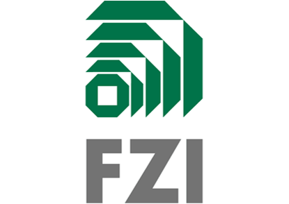
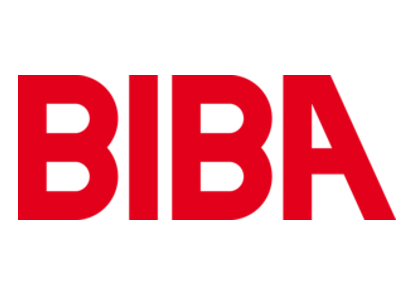
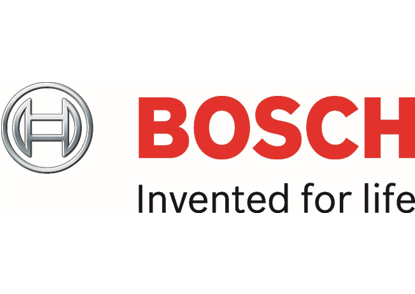

Projektpartner
Sieben Projektpartner aus Forschung und Wirtschaft arbeiten in diesem Projekt zusammen und
bringen durch ihre unterschiedliche Expertise verschiedene Perspektiven in das Konsortium ein.

Das FZI Forschungszentrum Informatik ist eine
gemeinnützige Einrichtung für Informatik-Anwendungsforschung und Technologietransfer.
Es bringt die neuesten wissenschaftlichen Erkenntnisse der Informationstechnologie in
Unternehmen und öffentliche Einrichtungen. Im Bereich der Informationstechnologie ist
das FZI Innovationsdrehscheibe in Baden-Württemberg. Als wirtschaftsnahe Forschungseinrichtung
erfüllt das FZI die Aufgabe einer Schnittstelle zwischen universitärer Forschung und praktischer
Anwendung.
Link zur FZI-Webseite
Link zur FZI-Webseite
Die Universität Karlsruhe ist mit zwei seiner Institute involviert.
Dies ist zum einen das Institut für Fördertechnik
und Logistiksysteme (IFL), dessen Tätigkeitsfelder sich in die Netzwerk-, Anlagen- und
Maschinenebene untergliedern lassen. Zum anderen ist das Karlsruhe Service Research Institute
(KSRI) involviert, ein weltweit führendes
Service-Institut zu Digitalen Service Systemen. Das KSRI ist dabei Vorreiter in der
Entwicklung innovativer Konzepte, Methoden und Technologien.
Link zur IFL-Webseite und Link zur KSRI-Webseite
Link zur IFL-Webseite und Link zur KSRI-Webseite

Das BIBA ist ein
ingenieurwissenschaftliches Forschungsinstitut. Es wurde 1981 als eines der ersten An-Institute
der Universität Bremen gegründet und zählt heute zu den großen Forschungseinrichtungen im
Land Bremen. Auf der Basis ausgeprägter Grundlagenforschung betreibt es anwendungsorientierte
Forschung und industrielle Auftragsforschung – national wie international, in den Bereichen
Produktion und Logistik.
Link zur BIBA-Webseite
Link zur BIBA-Webseite

Die Bosch-Gruppe ist ein international führendes Technologie- und
Dienstleistungsunternehmen. Die Aktivitäten gliedern sich in die vier Unternehmensbereiche
Mobility Solutions, Industrial Technology, Consumer Goods sowie Energy and Building
Technology. Als führender Anbieter im Internet der Dinge (IoT) bietet Bosch innovative
Lösungen für Smart Home, Smart City, Connected Mobility und Industrie 4.0.
Link zur Bosch-Webseite
Link zur Bosch-Webseite
Die Produktionstechnik weiter zu entwickeln, sie wirtschaftlich,
präzise, zukunftssicher und vernetzt zu gestalten – diese Aufgabe schreibt sich Trumpf auf die
Fahnen. Trumpf ist Markt- und Technologieführer bei Werkzeugmaschinen und Lasern für die industrielle
Fertigung und wirkt mit seinen Innovationen in nahezu jeder Branche. Die Softwarelösungen
von Trumpf ebnen den Weg in die Smart Factory, in der Industrieelektronik ermöglichen sie
Hochtechnologieprozesse.
Link zur Trumpf-Webseite
Link zur Trumpf-Webseite
Transport Betz ist eine international agierende Firmengruppe,
die sowohl im Speditions- als auch Logistikbereich tätig ist. Transport Betz übernimmt die Sendungen
zu den Kunden oder von den Lieferanten und garantiert mit ausgefeilten Abläufen und Prozessen
die zuverlässige Durchführung der Transporte und Verbringung der Produkte. Zusammen mit seinen Kunden
entwickelt Transport Betz maßgeschneiderte Logistiklösungen, die sich nahtlos in die
Betriebsabläufe des Kunden integrieren lassen.
Link zur Transport Betz-Webseite
Link zur Transport Betz-Webseite
Bedrunka+Hirth fertigt seit über 40 Jahren Einrichtungen für die Industrie,
das Handwerk und den Dienstleistungssektor. Das Unternehmen entwickelt Produkte nach modernsten
Gesichtspunkten. Es kommen nur hochwertige Stahlbleche und Stahlrohre zum Einsatz, um höchsten Ansprüchen
gerecht zu werden und großen Belastungen standzuhalten. Dadurch werden die Kunden bei der Optimierung ihrer
Wertschöpfung in den Bereichen Fertigung, Montage und Service unterstützt.
Link zur Bedrunka+Hirth-Webseite
Link zur Bedrunka+Hirth-Webseite